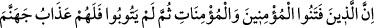
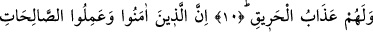
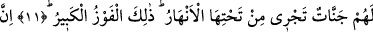
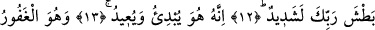
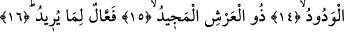

RABBİNİN YAKALAMASI
ÇOK ŞİDDETLİDİR
10. Şüphesiz inanmış erkeklerle inanmış kadınlara işkence edip sonra tevbe de
etmeyenlere Cehennem azabı ve (orada) yanma cezâsı vardır.
11. İman edip sâlih ameller işleyenlere ise, zemininden ırmaklar akan cennetler
vardır. İşte büyük kurtuluş budur.
12. Şüphesiz Rabbinin yakalaması çok şiddetlidir.
13. Bilin ki O, (kâinat yokken) ilk olarak yaratan, (ölümden sonra tekrar hayatı)
geri getirendir.
14. O, çok bağışlayan ve çok sevendir.
15. Arş’ın sâhibidir, çok yücedir.
16. Dilediği şeyleri mutlaka yapandır.
“Şüphesiz inanmış erkeklerle inanmış kadınlara işkence edip…” Âyette yer alan
“fetenû” kelimesinin kökü olan “el-fetn” yakmak demektir. Buna göre âyet-i kerimenin
mânâsı; şüphesiz inanmış erkeklerle inanmış kadınları dinleri hususunda deniyen, onlara
eziyet eden ve dinlerinden dönsünler diye onlara her türlü işkence edip sonra tevbe
etmeyenlere Cehennem azabı ve yanma cezâsı vardır.
Rivâyet olunduğuna göre Kureyş, Hz. Bilal’e ve başka müslümanlara âyette işâret
edildiği gibi işkence ediyorlardı. Belanın ibtiladan (başa gelmesinden) önce
savuşturulmamış olması belli bir amaca dayanmaktadır. Çünkü ehl-i velâ dediğimiz dost
kimselerin başı belâdan kurtulmaz. Nitekim şair şöyle der:
Heyhat ki ne heyhat! Nerde aşıka safa?
Adn Cenneti bile dertle dolu, bir ucdan diğer uca
“Sonra da” yâni yaptıkları fitnelerin ardından da, inkârlarından ve fitnelerinden
“tevbe de etmeyenlere” inkârları sebebiyle âhirette “Cehennem azabı ve yanma cezâsı